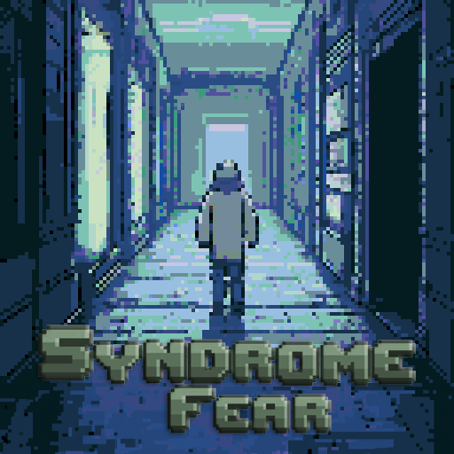

Synopsis
Ting, ting, ting... Un son métallique vous tire lentement du sommeil. La lumière blanche et vacillante d’un néon perce à travers vos paupières fermées. Vous ouvrez les yeux avec difficulté. Une pièce froide, aux murs nus et gris, baignée d’une lueur blafarde, vous entoure. Vous êtes allongé à même le sol, un goût métallique dans la bouche. Votre ressentez une affreuse douleur à la tête. Vous tentez de bouger, mais vos membres semblent engourdis. Où êtes-vous ? Que s’est-il passé ? Votre esprit est embrouillé, comme si un voile opaque recouvrait vos souvenirs. Impossible de vous rappeler comment vous êtes arrivé ici. Vous vous redressez lentement, la douleur dans votre crâne s’intensifie un instant. Les dernières quarante-huit heures. . . vous n’en avez aucun souvenir. Vous balayez la pièce du regard, cherchant un indice, un signe, quelque chose. Rien. Juste ces murs gris, ce néon clignotant. Une porte se dresse en face de vous, verrouillée. Derrière elle, des réponses ? Ou davantage de questions ? Vous devez comprendre. Vous devez savoir ce qui vous est arrivé. Un frisson parcourt votre échine. Vous n’êtes pas seul. Vous sentez une présence, presque imperceptible, dans l’air stagnant de la pièce. Quelqu’un d’autre est ici. Peut-être dans une autre pièce, peut-être juste derrière cette porte. Trouver cette personne devient votre priorité, c’est votre seule lueur d’espoir dans cet environnement oppressant. Mais pour vous en sortir, ce ne sera pas aussi simple. Chaque porte mène à une nouvelle pièce, chaque pièce semble être un labyrinthe de mystères. Des énigmes vous attendent, des indices éparpillés vous permettront de récupérer des fragments de votre mémoire. Petit à petit, vous devez reconstituer les morceaux de votre passé et comprendre pourquoi vous êtes ici. Ting. . . Le néon crépite à nouveau, le silence retombe, plus lourd que jamais. Vous vous redressez lentement, prêt à avancer. Chaque pas que vous ferez vous rapprochera de la vérité. . . ou vous fera peut-être plonger encore plus dans l’inconnu.
